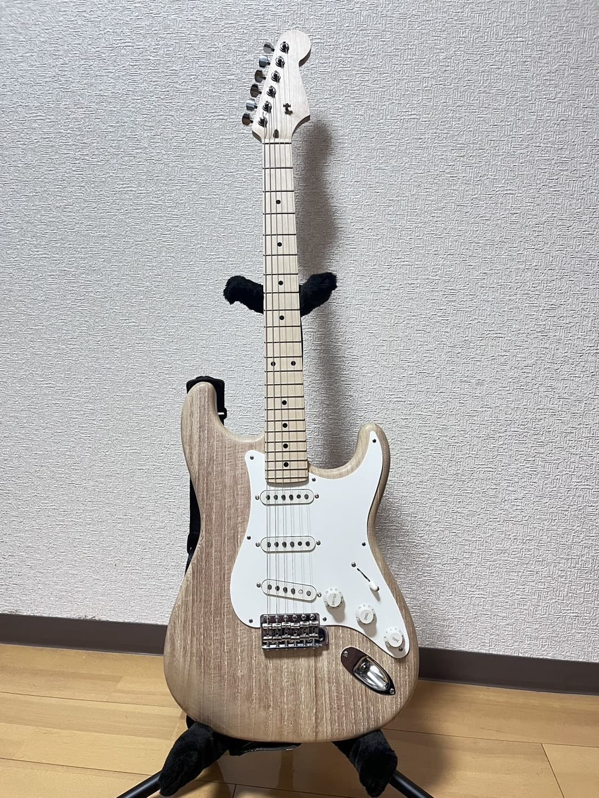
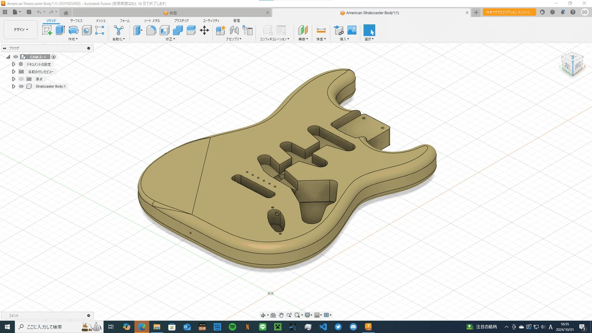
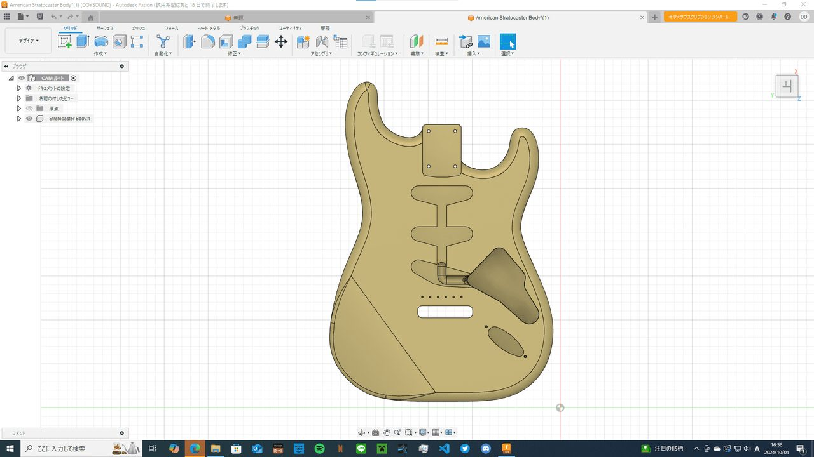
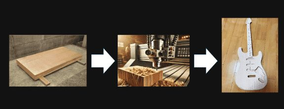
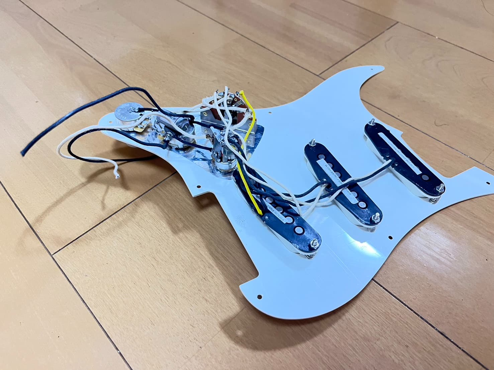
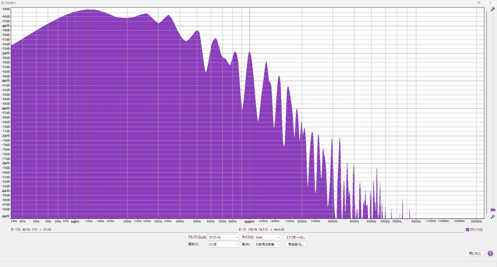
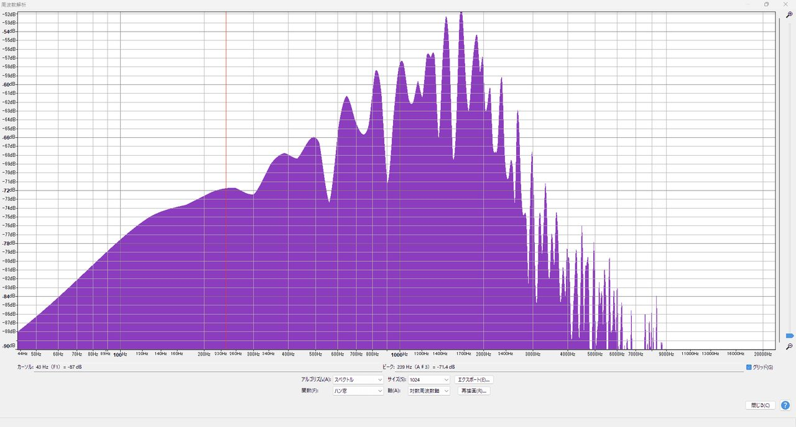

概要
桐材を用いた軽量ボディを採用し、演奏時の扱いやすさと明瞭なトーンを狙ったストラトキャスタータイプの自作ギターです。
CADの3Dモデルを基に木材をCNCで削り出し、電子部品の配線を行いました。
外観
完成した本体です。桐材ならではの軽さで長時間の演奏でも扱いやすく、木目を活かしたナチュラルな仕上げにしています。

3D Scan Viewer
完成品を3Dスキャンしたモデルです。ドラッグで回転、ピンチ/ホイールで拡大でき、ボディの曲面や仕上がりを立体のまま確認できます。
CAD（3Dモデリング）
Fusion 360でボディ外形からキャビティ、ネックポケットまでを設計しました。加工前に部品の収まりや配線経路を3Dモデル上で検証できるため、木材を無駄にせず削り出しに進めます。


3D Model Viewer
CADで設計したSTLモデルをブラウザ上でそのまま閲覧できます。上の3Dスキャン（完成品）と見比べると、設計どおりに削り出せていることが分かります。
CNC加工
3Dモデルからツールパスを生成し、桐材のボディをCNCで削り出しました。外形とキャビティを機械加工にすることで、手加工では出しにくい精度を確保しています。

配線
ピックアップとコントロール類の配線です。ボリュームには押し込み式のスイッチポットを採用し、演奏中に誤って音量を絞ってしまう操作ミスを防いでいます。

試奏動画
組み上げ後の試奏です。ピッキングのニュアンスの出方、ノイズの少なさ、サスティンの伸びを実際の演奏で確認しています。
スペクトル解析
市販のFender Japan製ストラトキャスターと同条件で録音し、周波数スペクトルを比較しました。本機は低域が控えめで、明るくすっきりした傾向であることが確認できます。

